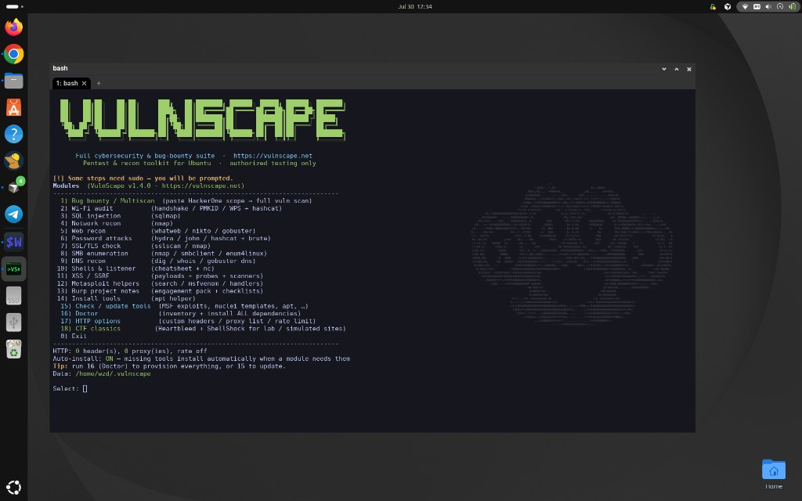
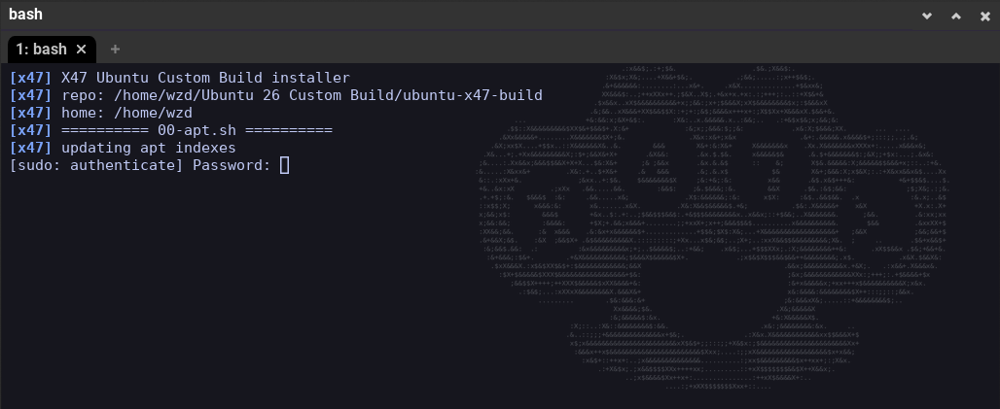

Install
Run on a fresh or existing Ubuntu desktop. Sudo is required for apt packages and hardening restore. The project is free — you only need Git and a network connection.
Quick start
git clone https://github.com/sk1tzwzd/ubuntu-x47-build.git
cd ubuntu-x47-build
chmod +x install.sh snapshot.sh modules/*.sh
./install.sh
Optional amnesia user (Tor-forced anon):
./install.sh --with-amnesiaFlags
| Flag | Effect |
|---|---|
--user-only | Skip apt + hardening; terminal, tools, icons, launchers only |
--skip-apt | Skip third-party repos and apt packages |
--skip-hardening | Skip UFW / fail2ban / sysctl / auditd restore |
--with-amnesia | Create the amnesiac Tor-forced anon user |
--only 10-terminal,30-icons | Run a subset of modules |
What gets installed
- Terminal — WezTerm AppImage, wrapper, watermark, GNOME default terminal
- Privacy — Mullvad VPN (apt), Tor Browser (latest from Tor Project)
- Tools — nmap, Metasploit, wireshark, hashcat, Go recon suite, pipx AD tools, cargo utilities, release binaries
- Icons & launchers — kali-* pack, custom cool icons, x47duster fallback (no Kali dragon)
- Hardening — files under
config/restored to/etc


./install.sh — apt module starting.Source
Repository:
github.com/sk1tzwzd/ubuntu-x47-build
Docs site (this page):
sk1tzwzd.github.io/ubuntu-x47-build